Device-free human activity recognition using compressed beamforming reports captured from a commodity 802.11ac router. No cameras, no wearables — just the WiFi the room already has.
A trained CNN listens to compressed beamforming (BFM) angles emitted by WiFi clients during normal channel sounding, decodes them into per-subcarrier complex channel ratios, and classifies the human activity in the room in real time.
Runs on a stock D-Link DIR-842 C2 with OpenWrt 24.10 and a 5 GHz monitor interface.
Self-ping at 100 Hz turns the router into both transmitter and receiver — radar-like sensing without external clients.
Streamlit page pulls pcaps over SFTP, decompresses, and predicts every second.
Phase-velocity features expose subtle motion that magnitude alone misses.
From an over-the-air WiFi action frame to a labeled activity in five stages. The same path is shared by both the labeled-collection GUI and the live Streamlit page.
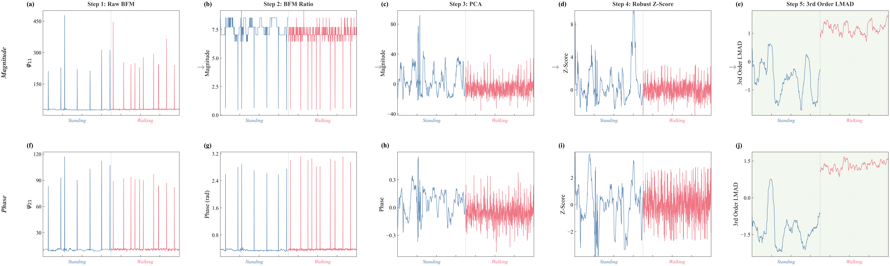
| Stage | Tool | Output |
|---|---|---|
| RF capture | tcpdump -i mon0 'wlan[24] == 21' | *.pcap |
| Frame parsing | tshark via bfmtool/extractor.py | angles CSV |
| Decompression | Givens rotation, bfmtool/preprocessor.py | complex per-subcarrier ratio |
| Feature extraction | magnitude / phase / Doppler | tensor for the model |
| Classification | Keras CNN | activity + probability |
The same packet window after each preprocessing stage. Magnitude on the left, phase on the right.
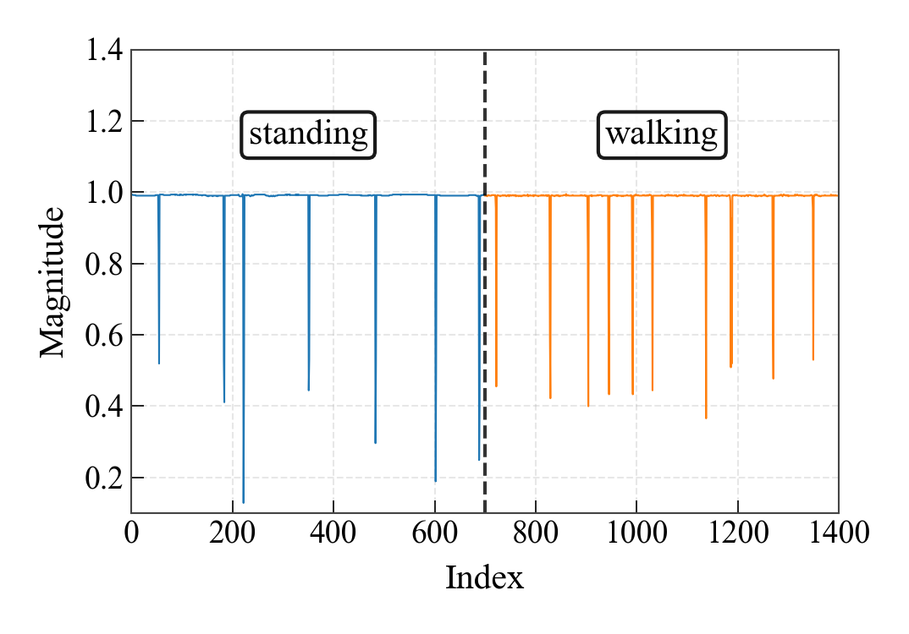
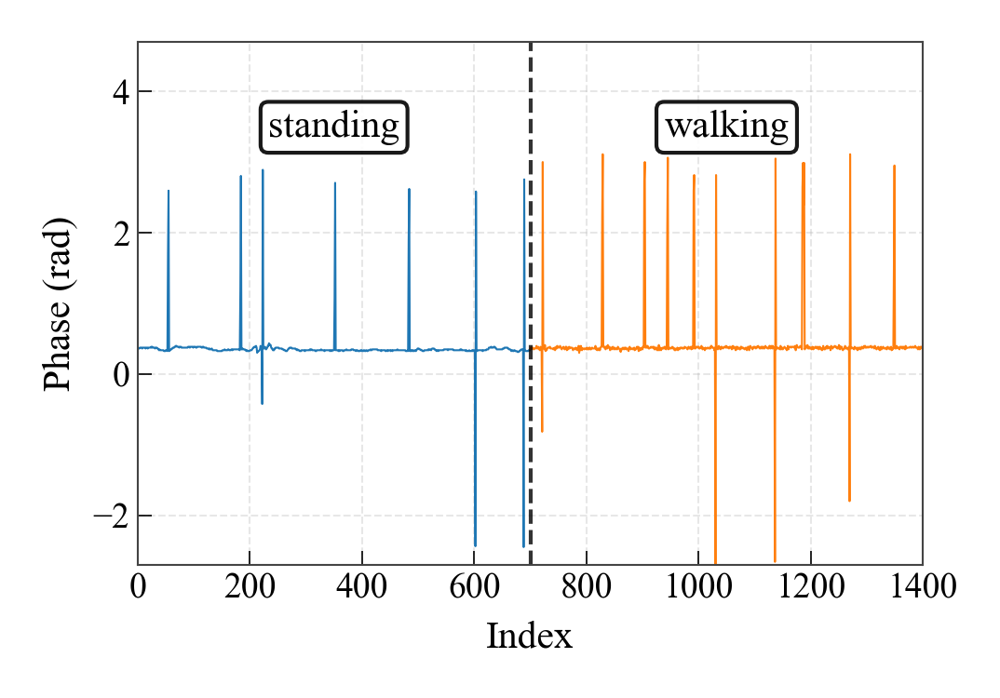
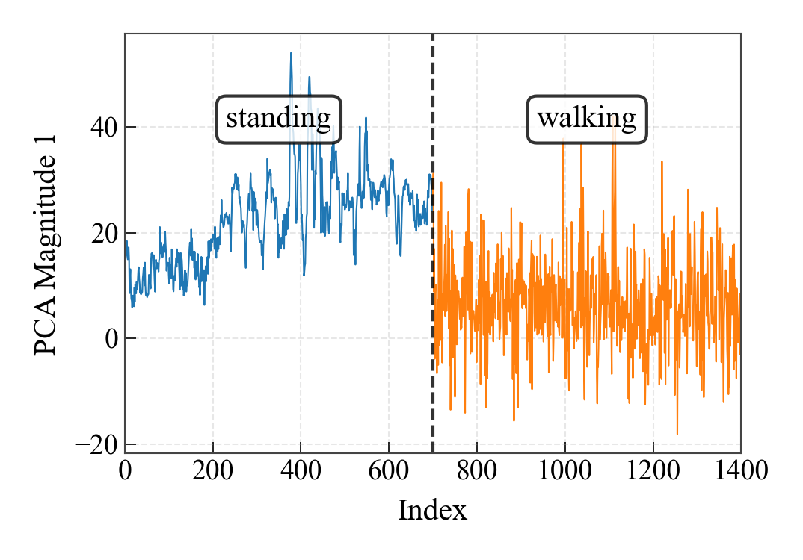
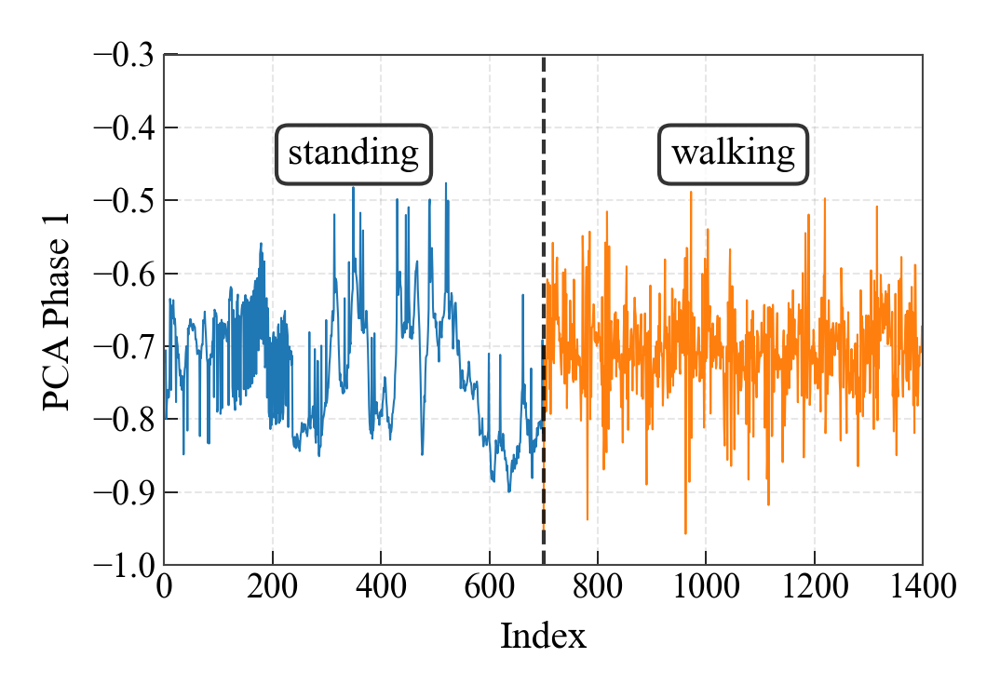
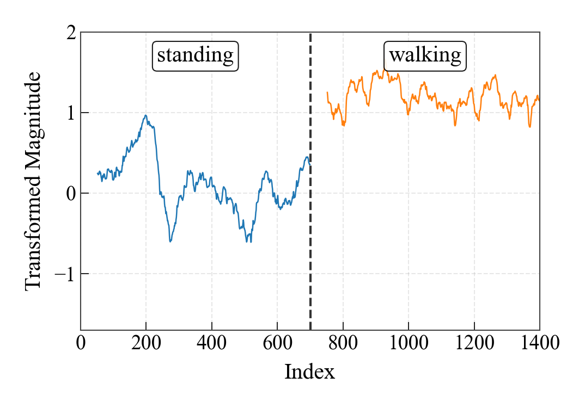
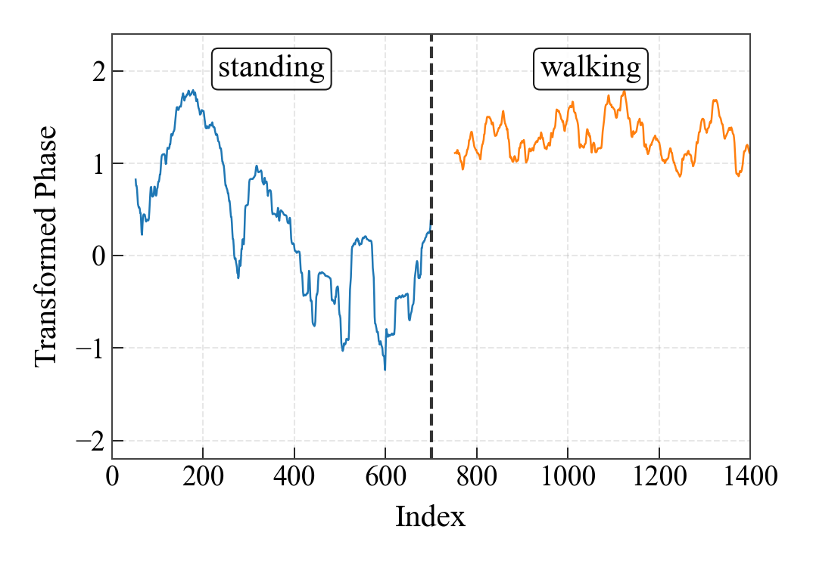
Per-environment CNN trained on labeled BFM windows, evaluated against held-out walks/standing sessions. Doppler-feature variant is the most robust to environment shifts.
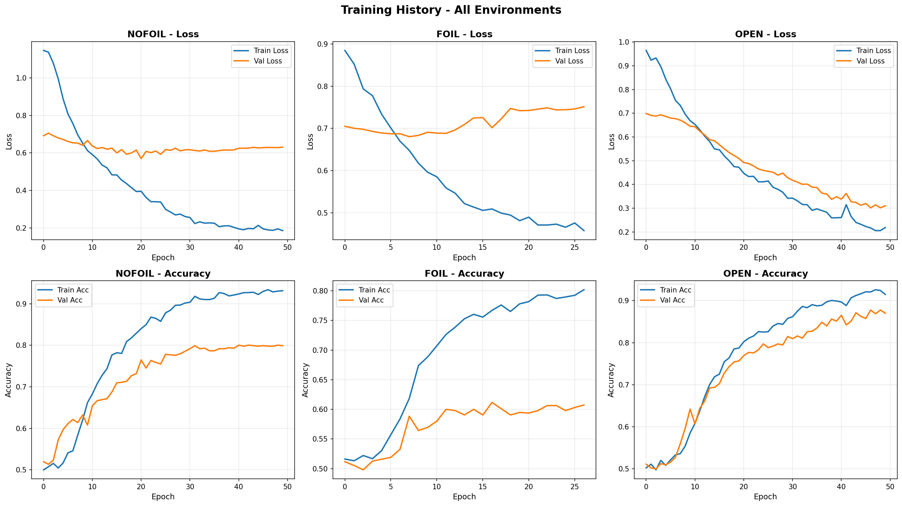
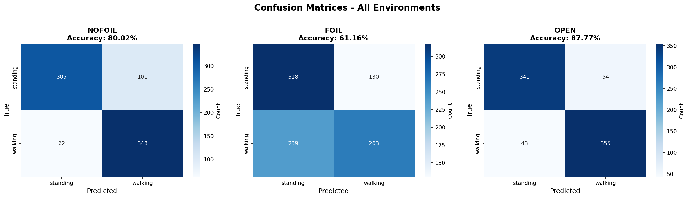
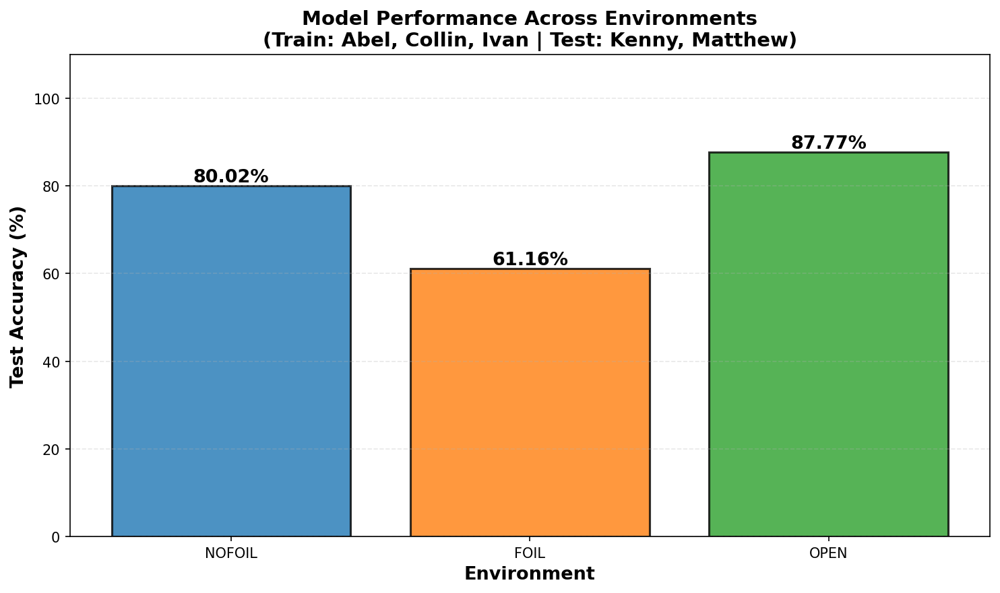
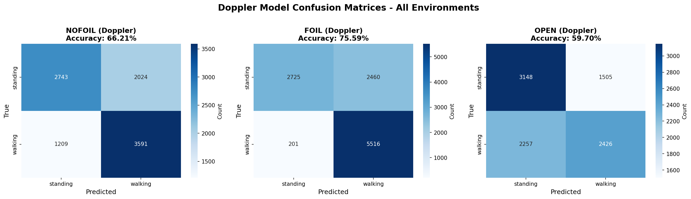
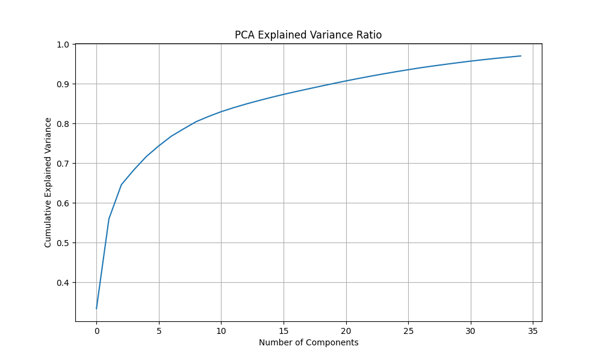
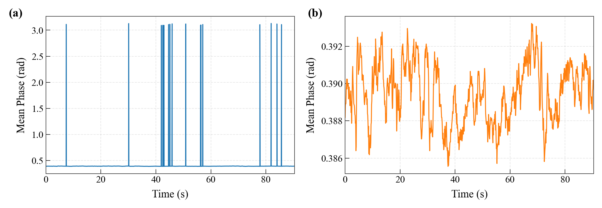
Plug an Ethernet cable from your laptop into the router. Then:
libpcap1, tcpdump-mini, and openssh-sftp-server
from the OpenWrt feed matching your architecture. Without
tcpdump-mini, capture cannot start; without
openssh-sftp-server, dropbear has no SFTP subsystem and
paramiko's downloads fail with EOF during negotiation.
pip install -r requirements.txt paramiko streamlit tensorflowstreamlit run pages/live_activity_detection.py
The same pipeline supports two sensing geometries, toggled by the
ENABLE_TRAFFIC_GENERATION flag in
pages/live_activity_detection.py.
The router pings its own IP at 100 Hz and runs iperf3 -s. The same device acts as transmitter and receiver, no external client required.
Disable traffic generation and rely on a phone or laptop already associated with the AP. Captures BFM frames generated by the natural traffic from those clients.